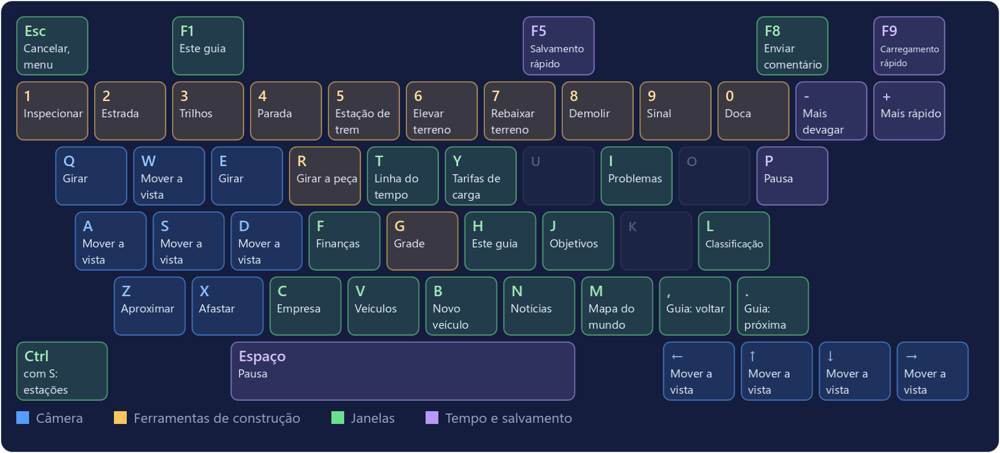

Controles
Teclado, mouse e touchpad, no Windows e no Mac.
As teclas coloridas fazem algo. A cor indica de que tipo.


Mover a vista
| Mouse | Touchpad | Teclado | |
|---|---|---|---|
| Mover a vista | Arraste com o botão direito. Com Inspecionar, o botão esquerdo também arrasta. | Role com dois dedos. | W A S D ou as setas. |
| Zoom | Gire a roda. | Faça pinça, ou segure Ctrl e role. | Z e X, ou Page Up e Page Down. |
| Girar | Arraste com o botão do meio, ou segure Alt e arraste. | Segure Alt e role para os lados. | Q e E, um quarto de volta cada. |
- A vista também rola quando o mouse toca a borda da tela. Dá para desligar isso em Configurações.
- Prefere dar zoom rolando no touchpad? Ligue Rolar com dois dedos dá zoom em Configurações; aí Ctrl e rolar move a vista.
Construir e inspecionar
- Botão esquerdo: usa a ferramenta atual. Clique para posicionar, arraste para construir linhas e áreas.
- Clique direito: cancela. O primeiro clique descarta o arraste em andamento; o seguinte guarda a ferramenta.
- Esc faz o mesmo, depois fecha a janela de cima e depois abre o menu do jogo.
- R gira uma estação, um depósito ou um aeroporto antes de você colocá-lo. Com uma ferramenta de ponte, muda o estilo da ponte.
- Com Inspecionar, o ponteiro vira uma mão sobre tudo o que pode ser aberto, e um anel marca o veículo que um clique abriria. Onde várias coisas se sobrepõem, clique de novo para passar à próxima.
- Deixe o ponteiro sobre um veículo e a rota dele aparece desenhada no mapa na cor da empresa, com as paradas numeradas em ordem. Ela continua visível enquanto a janela do veículo estiver aberta.
- O alterna entre as camadas do mapa: avaliação das estações, carga esperando, cobertura (quais casas e indústrias suas estações alcançam) e valor do terreno. O botão pequeno do minimapa lista as camadas, uma legenda explica as cores e Esc desliga a camada.
- A última camada, Problemas, põe um alfinete em tudo o que está na lista de Problemas: aponte para um alfinete para ver o que há de errado e clique para abri-lo.
- Pontes, túneis, depósitos, fiação aérea, aeroportos, Nivelar terreno e as ferramentas Ligar não têm tecla: escolha-os no grupo deles na barra de ferramentas.
- Ctrl+Z desfaz sua última construção e devolve o dinheiro. Veja Terreno e demolição.
Windows e Mac
O jogo é igual nos dois. Só estas teclas mudam:
| Windows, Linux | Mac | |
|---|---|---|
| Estações | Ctrl+S | ⌘S |
| Linhas | Ctrl+L | ⌘L |
| Desfazer construção | Ctrl+Z | ⌘Z |
| Salvamento rápido | F5 ou Ctrl+Shift+S | ⇧⌘S |
| Carregamento rápido | F9 ou Ctrl+Shift+L | ⇧⌘L |
| Tela cheia | F11 ou Alt+Enter | ⌃⌘F |
| Enviar comentário | F8 | fn+F8, ou o menu do jogo |
| Girar arrastando | Alt | ⌥ Option |
| Clique direito | Botão direito | Botão direito, ou Ctrl + clique |
| Zoom rolando no touchpad | Ctrl | ⌘ Command |
| Buscar um tópico neste guia | Ctrl+F | ⌘F |
Tempo
- Espaço ou P pausa e retoma. Você pode construir com o jogo pausado.
- + e - mudam a velocidade: normal, x2, x4, x8. Na velocidade normal, um dia dura cerca de 2 segundos.